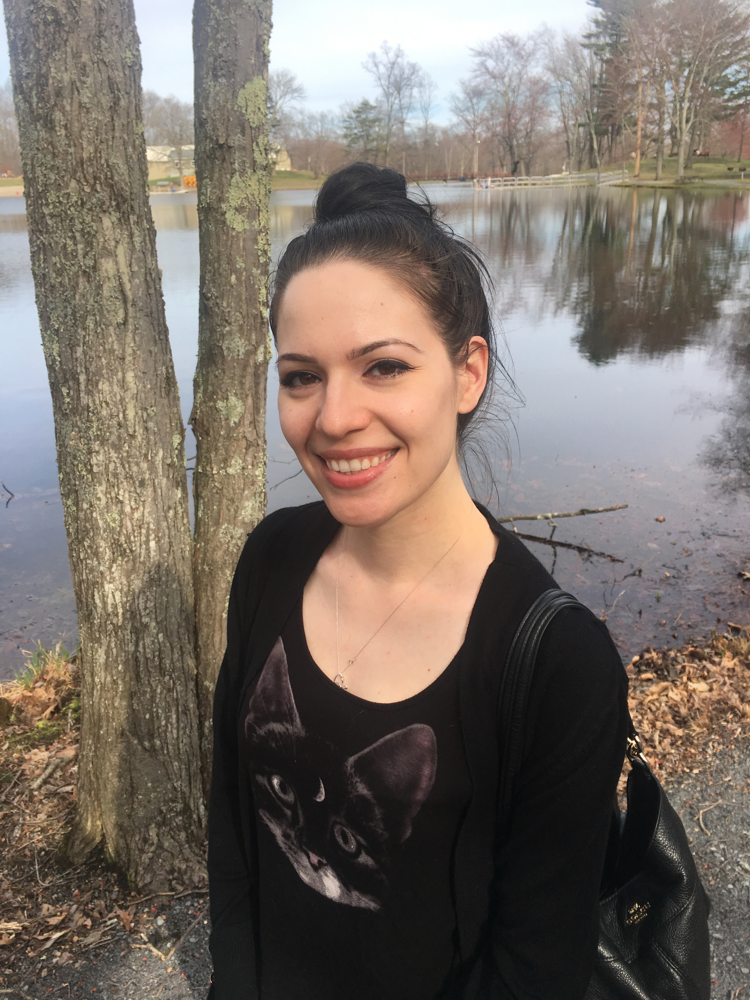

Hi there!
I'm Kaitlin Hoffmann, and I have a love for all things web development. To check out my full stack and dynamic websites,
check out the projects and github links above. This website is made with strictly HTML and CSS and will constantly be updated as I
learn more tips and tricks on CSS. Thanks for visiting!